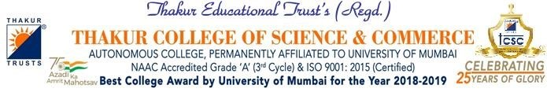

SCIENTILLA STEPHEN NADAR
scientilla5524@gmail.com
A-2005,Gaurav Samruddhi, Mira Road-E, Thane-401107
Career Objective
To obtain a career in reputed organization which provides me ample opportunities to excel in my profession and contribute effectively to the growth of the organization.
TECHNICAL SKILLS
- Python
- Linux
- ReactJS
- HTML
- Mysql Workbench
- AWS technologies
- Mysql
PROJECTS
WebPie | Tkinter
- Webpie is an interactive plug and play website builder that allows anyone without coding knowledge to create a website seemlessly.
- WebPie is built using Tkinter, HTML, CSS and few basic tools.
TPC Portal | Bootstrap
- Worked on the frontend of TPC (Training & Placement Cell) Portal for TCSC college.
- The frontend of the project was built using Bootstrap and other basic tools.
ExpenseEase | MERN
- Complete project built on MERN stack helps customers to log and track their daily expenses, savings and investments.
- React application with good and user friendly GUI.
EDUCATION
BSc. Computer Science | CGPA- 9.57
- Thakur College of Science and Commerce, Kandivali
- Studied most of the latest technologies like Fullstack development, software engineering, linux, etc along with personality development.
HSC (Pure Science) | 60.0%
- Mithibai College of Arts & Science, Vile Parle-W
- Studied combination of Physics, Chemistry, Maths and Biology.
SSC | 82.20%
- Divine Child High School, Chakala
INTERNSHIP
Hands In Technology, kandivali
- Worked on various project's frontend using HTML, CSS and gained hands on exprience working in the IT sector.
CERTIFICATIONS AND ACHIEVEMENTS
- Machine Learning Foundations (TCSC)
- Amazon Web Services (AWS)
- Javascript Fundamental (Udemy)
- Linux Fundamentals (TCSC)
- DBMS ( TCSC)
- Artificial Intelligence (NPTEL)
- Complete WebDevelopment Bootcamp(Udemy)
- Google Colab Machine Learning (PPB)
- Python 3 (Udemy)
- Cloud Computing ( NPTEL)
- 1st Prize in Origin ( Innovation Exhibition)
COMPETENCES
- Responsible Decision- Making
- Analytical & Reasoning Skills
- Surpass expectations for customer satisfaction for growth of organization
- Quick thinking/Learning
- Better understanding of Business logic and needs
- Training and Placement Cell Member at TCSC
PERSONAL INFORMATION
DOB : 20-05-2001
Gender : Female
Marital Status : Unmarried
Languages known:
- English (Professional Working)
- Hindi (Native or Bilingual)
- Marathi (Elementary)
- Tamil (Native or Bilingual)